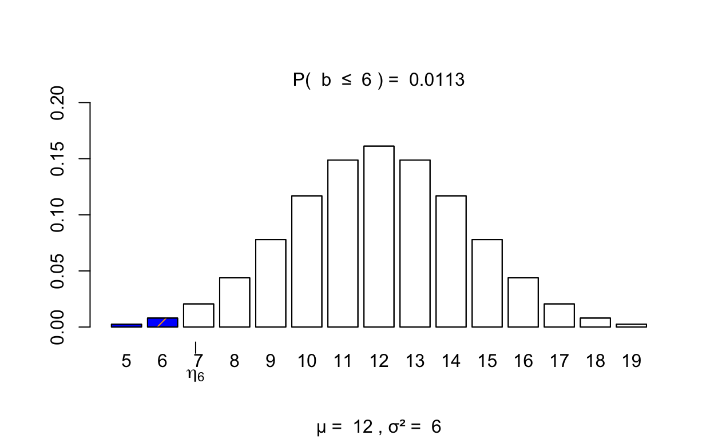
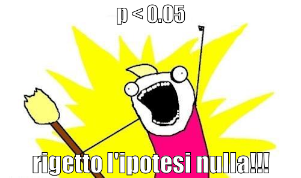
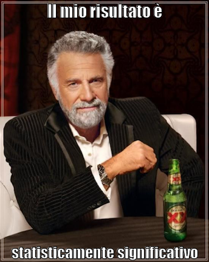
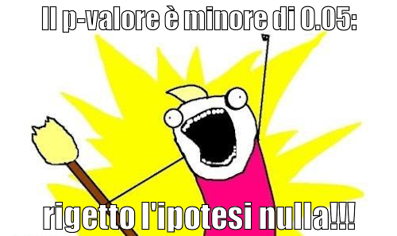

Il punto di vista frequentista.
Presento qui un brevissimo tutorial che si pone il problema di chiarire, agli studenti che sono esposti per la prima volta a queste idee, la motivazione che sta alla base del test dell’ipotesi nulla. Ci sono tantissime fonti per familiarizzarsi con questi concetti, e le dispense di Psicometria sono un buon punto di partenza. Qui sempifico ancora di più per cercare di presentare l’introduzione più intuitiva possibile a questo argomento. Mi ispiro, in parte, al blog di Michael Franke.
Le idee bayesiane sono state presentate per la prima volta nel XVII secolo (da Thomas Bayes) e hanno ricevuto un solido trattamento matematico a partire dal XVIII secolo (dal matematico francese Pierre-Simon Laplace). Una rigorosa base filosofica della probabilità soggettiva è stata fornita all’inizio del XX secolo (da autori come Frank Ramsey o Bruno de Finetti). Tuttavia, nella prima parte del 20° secolo, la statistica come strumento moderno e onnipresente utilizzato per l’acquisizione della conoscenza empirica nella scienza è stata dominata da una tradizione nettamente non bayesiana. Figure chiave nello sviluppo iniziale di tali idee statistiche (come Ronald Fisher, Egon Pearson e Jerzy Neyman) erano piuttosto contrarie alle idee bayesiane. Mentre i meccanismi precisi di questo sviluppo storico sono molto interessanti (dal punto di vista della storia e della filosofia della scienza), è sufficiente dire qui che almeno le seguenti due obiezioni (correlate) molto probabilmente hanno contribuito molto a come la storia si è svolta:
In alternativa agli approcci bayesiani, il metodo dominante di inferenza statistica del XX secolo è la statistica frequentista. Per una questione di forte convinzione filosofica, la statistica frequentista rinuncia del tutto alla nozione di probabilità soggettiva: nessuna distribuzione a priori sui parametri, nessuna distribuzione a priori sui modelli, nessuna credenza del ricercatore. Una spiegazione rozza (e certamente semplificata) del motivo per cui gli approcci frequentisti evitano le credenze soggettive è questa. Il frequentismo estremo nega che una distribuzione di probabilità su un parametro latente come \(\theta\) è sensato. Qualunque sia la scelta, essa non può essere giustificata o difesa in modo scientificamente rigoroso. Le uniche affermazioni sulle probabilità che sono concettualmente valide, secondo un’interpretazione frequentista fondamentalista, sono quelle che derivano da intuizioni sulle frequenze relative quando (ipoteticamente) si esegue ripetutamente un esperimento casuale (come lanciare un dado o estrarre una pallina da un’urna).
Al centro delle statistiche frequentiste è la nozione di p-valore, che gioca un ruolo centrale nella verifica delle ipotesi. Consideriamo un esempio. L’obiettivo è sviluppare un’idea intuitiva di come i metodi frequentisti possano funzionare senza fare riferimento alle nozioni di probabilità soggettiva e distribuzioni a priori.
Poniamoci un problema che è semplice da discutere utilizzando i principi base della teoria della probabilità.
Diciamo che vorremmo sapere se una data moneta non è equilibrata.
Abbiamo osservato k = 6 successi in N = 24 lanci. Questi sono i nostri dati e sembrano essere in accordo con la nostra ipotesi.
Per la ragione “ornitologica” di Popper (“tutti i cigni sono bianchi”) non possiamo dimostrare che la nostra ipotesi è vera (non si può mai dimostrare la verità di una proposizione). Per cui ci poniamo il problema di cercare di dimostrare falsa l’ipotesi complementare.
L’ipotesi complementare è quella che dice che la moneta è equilibrata.
Se chiamiamo \(\theta\) la probabilità di successo, in base all’ipotesi complementare a ciò che ci interessa, che chiameremo ipotesi nulla, o \(H_0\), abbiamo \(\theta_c\) = 0.5.
La statistica frequentista si rifiuta di formulare convinzioni a priori (o soggettive) su quello che può essere il valore verosimile di \(\theta_c\), ma ci invita ad impegnarci in un ipotetico gioco mentale. Quindi, supponiamo per amor di discussione che la moneta sia equlibrata. Ovvero, assumiamo per amor di discussione che l’ipotesi nulla sia vera. Non è una convinzione; è un esperimento mentale: non c’è niente di sbagliato in questo.
Costruiamo un modello frequentista sulla base dell’assunzione dell’ipotesi nulla e lo chiamiamo modello dell’ipotesi nulla.
Il modello dell’ipotesi nulla assume \(\theta_c\) = 0.5 e crea la funzione di verosimiglianza dei dati sulla base della legge Binomiale. Perché la legge Binomiale? Perché il numero di successi in una sequenza di prove Bernoulliane ha le proprietà descritte dalla legge Binomiale. E stiamo parlando proprio di questo: del numero di successi in una sequenza di lanci della moneta.
Possiamo dunque calcolare una misura che ci dice quanto sarebbe sorprendente l’osservazione dei dati alla luce dell’ipotesi puramente strumentale che il modello dell’ipotesi nulla sia vero. In parole più bayesiane, siamo interessati a misurare la perplessità di un agente che crede sinceramente e inflessibilmente che la moneta sia equilibrata, quando quell’agente osserva k = 6 e N = 24.
Se la perplessità dell’agente è estremamente alta, cioè se il modello dell’ipotesi nulla non è in grado di prevedere i dati che l’agente ha osservato in un modo sufficientemente preciso, allora questo fatto (l’incapacità della previsione del modello dell’ipotesi nulla) viene preso come prova contro il modello dell’ipotesi nulla. Poiché il modello dell’ipotesi nulla è basato sull’assunzione che abbiamo chiamato “ipotesi nulla” (ovvero, \(\theta_c\) = 0.5), un alto grado di perplessità dell’agente viene intesa come prova contro l’ipotesi nulla.
La nozione che quantifica la perplessità dell’agente, ovvero l’evidenza contro l’ipotesi nulla è il = p-valore, che è stato introdotto da Ronald Fisher.
Costruiamo il modello dell’ipotesi nulla. L’approccio frequentista si pone la seguente domanda:
se è vera l’ipotesi nulla (\(\theta_c\) = 0.5), quali risultati verrebbero osservati ripetendo infinite volte l’esperimento casuale?
L’esperimento casuale consiste in 24 lanci della moneta per osservare il numero di successi. Se pensiamo di ripetere infinite volte questo esperimento casuale, quello che otteniamo è la distribuzione Binomiale, la quale, se assumiamo vera \(H_0\) (ovvero, \(\theta_c\) = 0.5), ha la seguente forma:
library("visualize")
visualize.binom(
stat = 6,
size = 24,
prob = 0.5,
section = "lower",
strict = FALSE
)

Questa è la distribuzione campionaria della statistica test, ovvero il numero k di successi in N = 24 prove. Si chiama statistica test perché viene utilizzata per la verifica dell’ipotesi nulla.
La distribuzione campionaria ci dice qual è la probabilità (siamo nel caso discreto) di osservare ciascuno dei possibili valori che la statistica test (in questo caso, k) può assumere.
Questo è il modello dell’ipotesi nulla.
L’approccio frequentista alla verifica dell’ipotesi nulla ci dice che, se le osservazioni empiriche sono sufficientemente improbabili all’interno del modello dell’ipotesi nulla, questo fatto dovrebbe essere trattato come prova contro l’ipotesi nulla.
In altre parole: il modello dell’ipotesi nulla è un modello di come dovrebbe funzionare il mondo. Se i dati che abbiamo osservato sono incompatibili con questo modello, concludiamo che il modello non fuziona.
Una misura di quanto improbabili siano i dati alla luce di \(H_0\) è il p-valore. Una definizione di p-valore è la seguente:
Il p-valore associato ai dati osservati \(D_{oss}\) è uguale alla probabilità, basata sull’assunzione che \(H_0\) sia vera, di osservare un risultato per la statistica del test che fornisce un’evidenza contraria ad \(H_0\) almeno estrema quanto il risultato osservato, o di più.
Il modello dell’ipotesi nulla fa una predizione sul valore della statistica osservata. Tale predizione corrisponde al valore atteso del modello dell’ipotesi nulla, ovvero il valore atteso della distribuzione campionaria della statistica test. Nel caso presente, tale valore atteso è \(\mu\) = 12.
Invece abbiamo osservato k = 6. Tanto più lontano è k dal valore atteso del modello dell’ipotesi nulla, tanto più grande sarà la sorpresa di un agente che crede sinceramente a ciò che dice \(H_0\).
Tale sorpresa si quantifica con il p-valore, ovvero con la probabilità, all’interno del modello dell’ipotesi nulla, di osservare il risultato che è stato effettivamente osservato, o un risultato ancora più lontano dal valore atteso del modello dell’ipotesi nulla.
Se i dati, ovvero k, sono molto simili al valore atteso del modello dell’ipotesi nulla, non c’è sorpresa alcuna: il mondo funziona esattamente come previsto da \(H_0\). Invece, se i dati sono molto diversi dal valore atteso del modello dell’ipotesi nulla, un agente che crede sinceramente in \(H_0\) sarà molto sorpreso, tanto più sorpreso tanto maggiore è la distanza dei dati dal valore atteso del modello dell’ipotesi nulla. Se la distanza tra i dati e il valore atteso del modello dell’ipotesi nulla è troppo grande, allora l’agente sarà sbalordito e smetterà di credere ad \(H_0\).
Quantifichiamo dunque il grado di sorpresa di un agente che crede sinceramente ad \(H_0\) (ovvero, calcoliamo il p-valore).
Abbiamo osservato k = 6 in N = 24 prove. Quali sono i valori che, rispetto al valore osservato, risultano ancora più lontanti dal valore atteso del modello dell’ipotesi nulla?
Sono i valori k = 5, k = 4, k = 3, k = 2, k = 1, k = 0.
Qual è la probabilità di osservare, nel modello dell’ipotesi nulla, il risultato che abbiamo effettivamente osservato, o uno ancora più estremo?
Questo è il p-valore.
Un p-valore grande significa che la statistica osservata è molto simile al valore atteso del modello dell’ipotesi nulla. Un p-valore grande corrisponde dunque an un piccolo valore di sorpresa. In tali condizioni l’agente che crede sinceramente in \(H_0\) si sente rassicurato: il modello dell’ipotesi nulla prevede in maniera accurata i dati che sono stati osservati.
Un p-valore piccolo significa che la statistica osservata è molto lontana al valore atteso del modello dell’ipotesi nulla. Un p-valore piccolo corrisponde dunque an un grande valore di sorpresa. In tali condizioni l’agente che crede sinceramente in \(H_0\) si sente sbalordito: il modello dell’ipotesi nulla non è in grado di prevedere i dati che sono stati osservati.
Quando è possibile rigettare \(H_0\)? Quanto sbalordito deve essere un agente frequentista per smettere di credere in \(H_0\)?
Nell’approccio frequentista, è possibile rigettare \(H_0\) quando il livello di sorpresa corrisponde ad un p-valore minore di 0.05.

Nel gergo (desueto) dell’approccio frequentista, un risultato che porta a rigettare \(H_0\) si dice statisticamente significativo.

Quello descritto sopra è un approccio frequentista, nel senso che le probabilità sono interamente basate su ripetizioni (ipotetiche) del presunto processo di generazione dei dati, il che presuppone che \(H_0\) sia vera.
Si noti inoltre che la nozione di “prove più estreme contro \(H_0\)” dipende dai nostri scopi epistemici, cioè dalla domanda di ricerca a cui siamo interessati.
Nell’esempio che stiamo discutendo ciò a cui siamo interessati è capire se la moneta sia bilanciata oppure no.
Evidenze contrarie ad \(H_0\) (la quale afferma che la moneta è bilanciata, ovvero \(\theta\) = 0.5) sono fornite da tutti quei risultati empirici che sono molto lontani dal valore atteso del modello dell’ipotesi nulla. Ovvero, nel caso presente, valori molto piccoli di k (come 0, 1, 2, …) ma anche valori molto grandi della statistica k (come 21, 22, 23, 24).
Nel caso presente abbiamo osservato k = 6 successi in N = 24 prove. La probabilità di osservare 6 o meno successi in N = 24 prove è 0.0113. Ma una eguale evidenza contraria ad \(H_0\) verrebbe fornita anche dall’osservare k = 17 o più successi in N = 24 prove:
1 - pbinom(17, 24, 0.5)
[1] 0.01132792Il valore di k = 17 successi è infatti egualmente distante dal valore atteso del modello dell’ipotesi nulla di quanto lo sia il valore k = 6 successi.
Dunque, se pensiamo di rigettare \(H_0\) quando osserviamo un valore k molto lontano dal valore atteso del modello dell’ipotesi nulla, non importa in che direzione, dobbiamo considerare simultaneamente il grado di sorpresa che sarebbe associato a tutti gli eventi contrari ad \(H_0\). Dunque, sia valori k pari a quello osservato o più piccoli, sia valori k corrispondenti nella coda opposta della distribuzione di k ipotizzata dal modello dell’ipotesi nulla.
Se il nostro interesse è quello di rigettare \(H_0\) quando troviamo valori di k troppo piccoli oppure troppo grandi (rispetto al valore atteso del modello dell’ipotesi nulla), allora il livello di sorpresa di un agente che crede sinceramente a \(H_0\) deve essere quantificato sommando le probabilità nelle due code della distribuzione.
Nel caso presente, abbiamo:
ovvero
2 * pbinom(6, 24, 0.5)
[1] 0.02265584La regola è sempre la stessa:

In alcuni casi, però, un test bidirezionale non ha senso. Chiediamoci per esempio se un intervento psicologico funziona nel ridurre i sintomi della depressione. Supponiamo che la staistica test sia la differenza tra il valore BDI-II al pre-test e al post-test. Valori BDI-II alti significano un maggiore livello di depressione. Dunque una differenza pre-test e al post-test positiva (valore grande meno valore piccolo) indica che il trattamento ha avuto effetto (la depressione è diminuita).
Una statistica test pari a zero significa che il trattamento non ha avuto alcun effetto.
Una statistica test minore di zero (valore grande meno un valore ancora maggiore) significa che il trattamento ha un effetto disastroso: fa aumentare anziché diminuire la depressione.
L’ipotesi nulla ci dice che l’intervento non ha alcun effetto.
Ma in queste condizioni possiamo rigettare l’ipotesi nulla (e concludere che l’intervento psicologico è efficace) solo quando la depressione diminuisce dopo il trattamento, ovvero quando la statistica test assume valori positivi molto lontani dal valore atteso specificato dal modello dell’ipotesi nulla (ovvero, una differenza pre-test meno post-test uguale a zero).
In questo caso poniamo la regione di rifiuto dell’ipotesi nulla solo nella coda destra della distribuzione della statistica test specificata dal modello dell’ipotesi nulla. Ovvero, rifiutiamo \(H_0\) soltanto quando il trattamento psicologico è efficace, ovvero quando la depressione al post-test è diminuita rispetto al pre-test, ovvero quando la statistica test è positiva.
In queste circostanze, quando possiamo rifiutare \(H_0\)? Quando il livello di sorpresa di un agente che crede sinceramente a \(H_0\) (ovvero, al fatto che il trattamento psicologico non funziona) è grande. Questo si verificherà solo se i valori della statistica test saranno lontani dal valore atteso specificato dal modello dell’ipotesi nulla nella coda positiva della distribuzione.
Ritorniamo all’esempio del lancio della moneta.
Supponiamo che la nostra ipotesi sostantiva sia che la moneta provenga da una fabbrica che produce monete sbilanciate le quali generano, in media, una proporzione di successi maggiore di 0.5.
Nel nostro caso, abbiamo ottenuto una proporzione di
6 / 24
[1] 0.25successi. Questo valore è minore di 0.5. Dunque non possiamo usare questi dati per sostenere l’ipotesi che la moneta produce un numero di successi maggiore di 0.5, perché i dati dicono il contrario. Dunque in questo caso, anche se i dati sono lontani dal valore atteso ipotizzato da \(H_0\) (ovvero \(\theta = 0.5\)), non possiamo rigettare \(H_0\) e accettare \(H_1\) che dice che \(\theta > 0.5\). Non abbiamo alcuna evidenza di questo!
In queste circostanze possiamo rigettare \(H_0\), che dovrebbe essere scritta come \(\theta \leq 0.5\), solo se osserviamo un valore \(k\) molto più grande di 12 (non più piccolo di 12, perché i valori k minori di 12 sono compatibili con \(H_0\)).
Nel caso di un test unidirezionale, dunque, il p-valore si calcola utilizzando soltanto i valori della statistica test che si situano nella coda della distribuzione che porta al rifiuto di \(H_0\).
Per esempio, possiamo rifiutare l’ipotesi nulla \(H_0: \theta \leq 0.5\) quando osserviamo k = 17 successi in N = 24 prove. In tali circostanze, infatti, il p-valore è
minore di \(\alpha\) = 0.05.
Dove si situa la regione di rifiuto di \(H_0\) dipende dunque dalla domanda della ricerca.
Text and figures are licensed under Creative Commons Attribution CC BY 4.0. The figures that have been reused from other sources don't fall under this license and can be recognized by a note in their caption: "Figure from ...".